行者无疆·秦育遗韵 | 团队集结！


西安古韵，岁月如织，
一城汉风，长安遗梦；
雪覆秦俑坑，
花映大唐魂，
漫步千年古都道，
一览盛世繁华颜。
行者们再度启程，
“陕”耀古今，梦回西安！

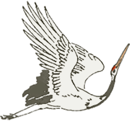

成员介绍


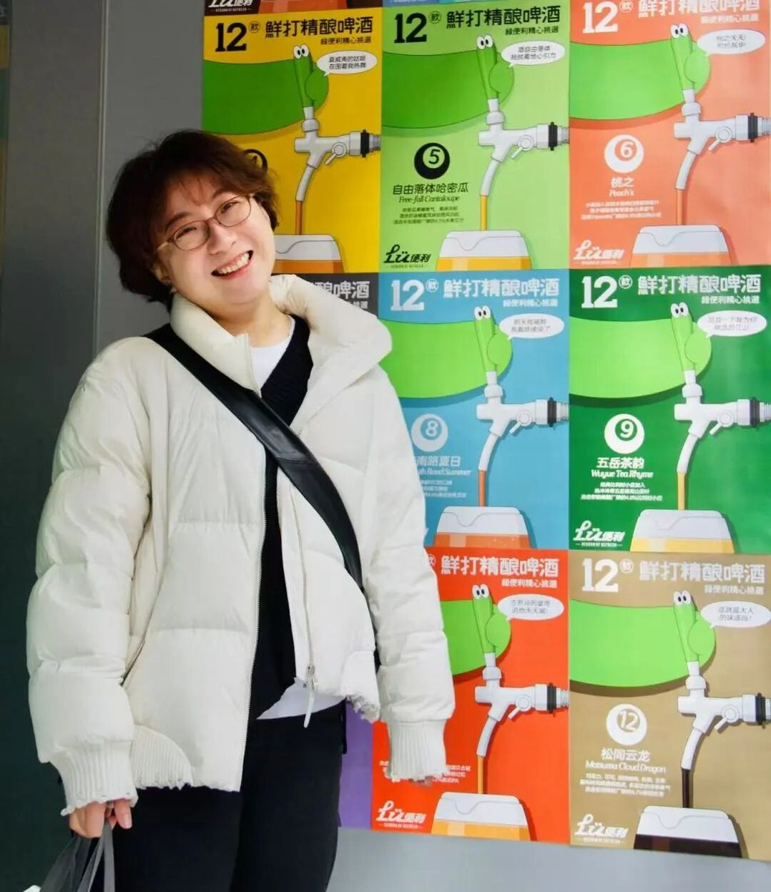
邹靓靓
指导老师
行之力则知愈进，知之深则行愈达。
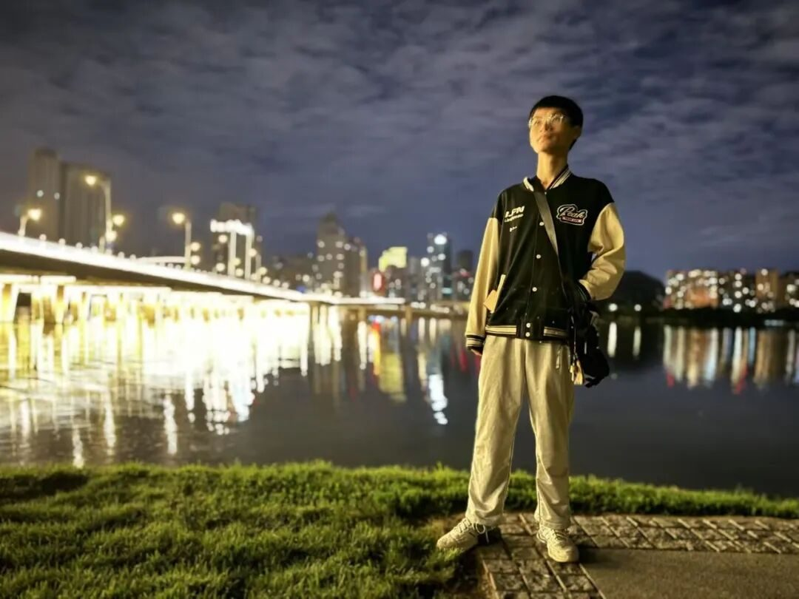
李凌志
队长
行者，
其足迹可踏遍千山万水，
疆域何能限之；
思者，
其思绪可纵横天地之间，
域界岂可为缚。
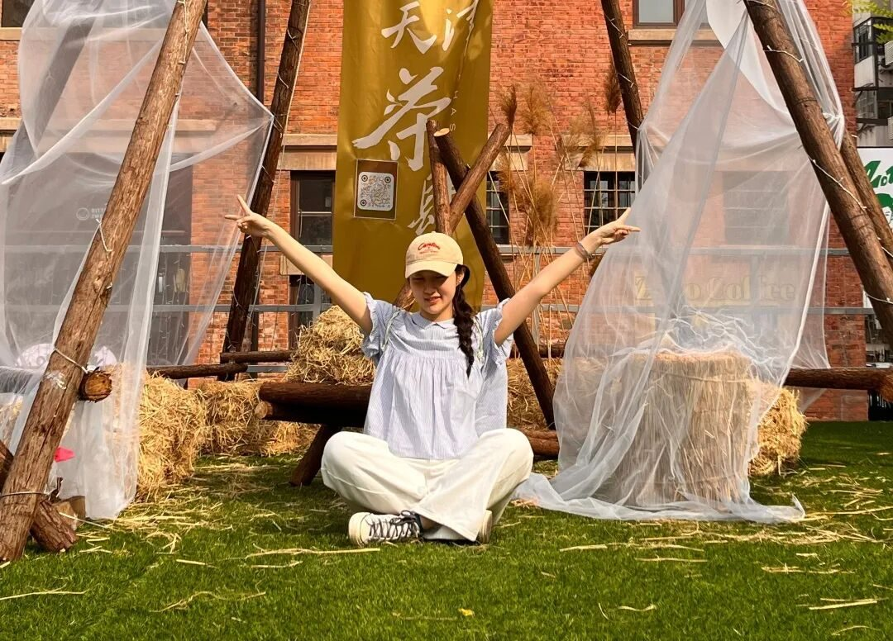
范伊诺
采访组组长
飞起，就能对话灿灿阳光，
栖落，即可倾听娓娓花语。
邓雪
调研组组长
靡不有初，鲜克有终。
张涵瑜
外联兼后勤组组长
温和地坚持并且微笑。
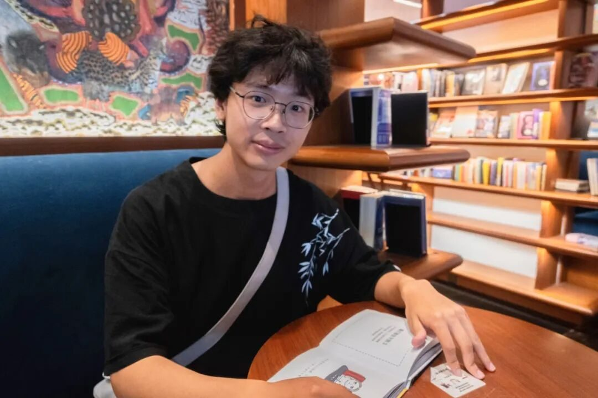
樊星烁
技术组组长
去探索，去创造，去发现，去追寻！
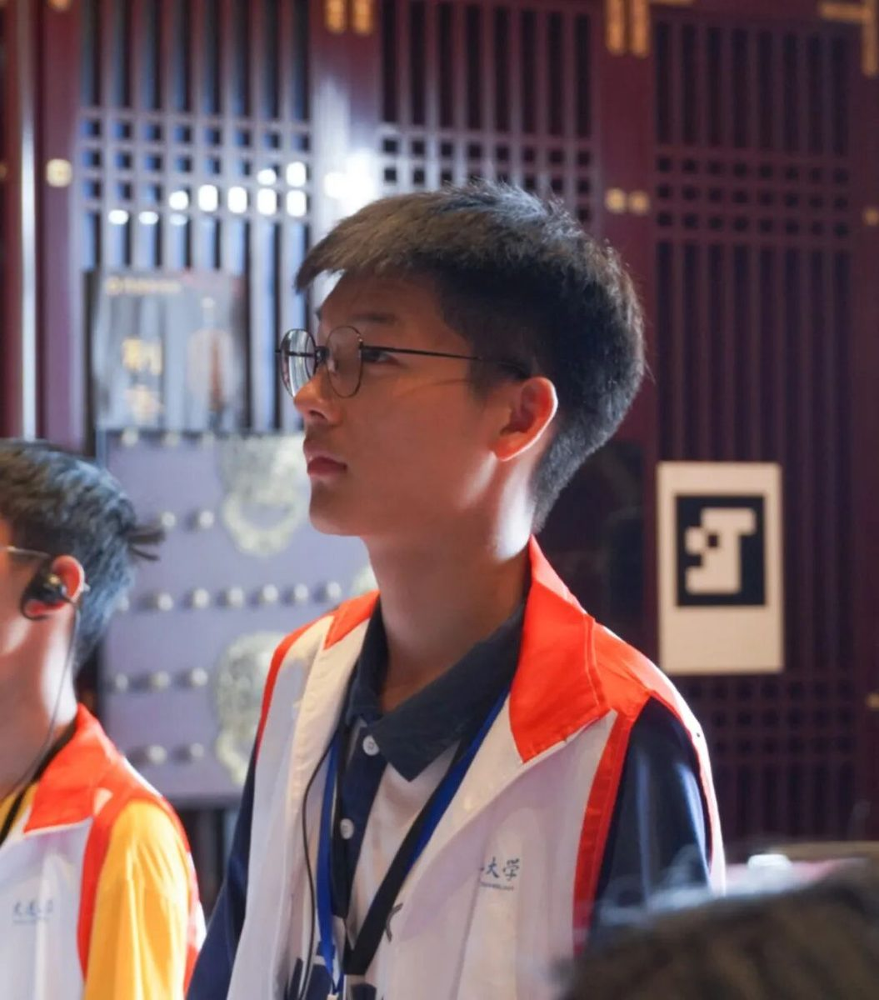
杩健辉
文宣组组长
逐梦之路，心向暖阳，
征途虽远，步履铿锵！
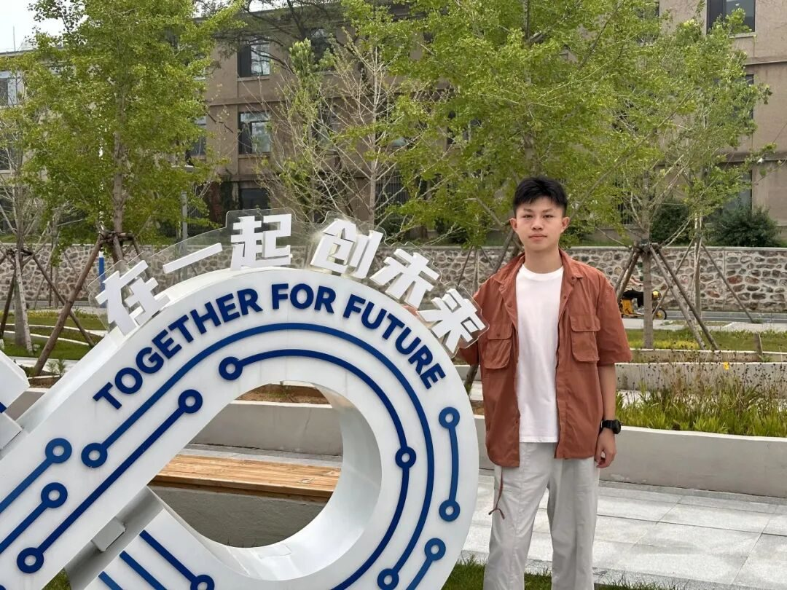
邢允辅
采访兼调研专员
不积跬步无以至千里，
不积小流无以成江海。
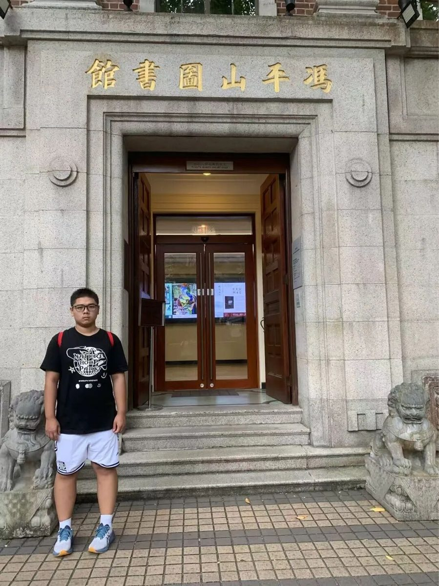
王子翔
后勤兼外联专员
“行”遍西安，脚步不止，
渐行渐近彼此的世界。
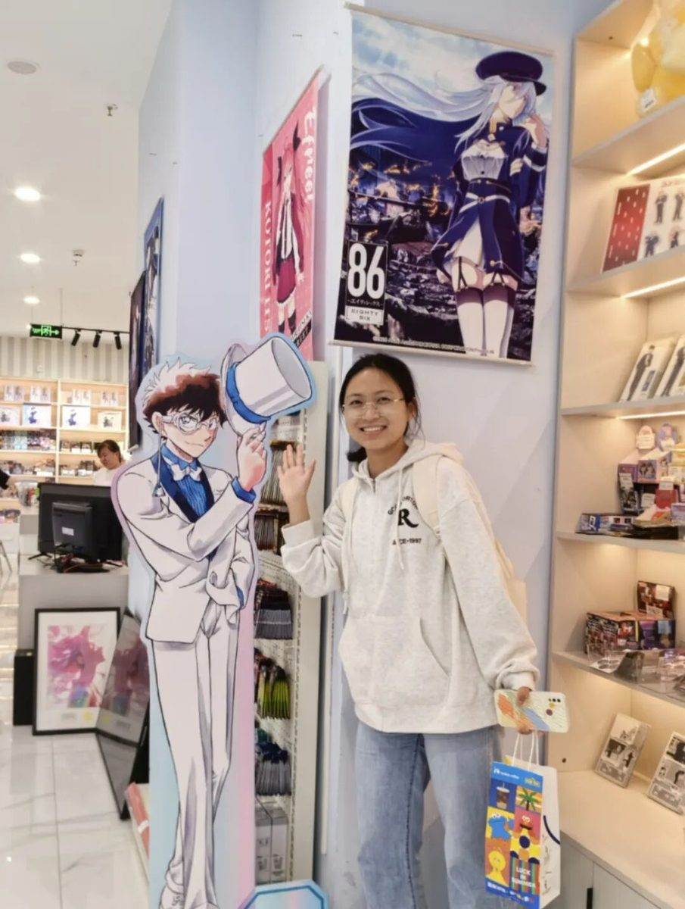
郑瑞瑄
文宣兼采访专员
一直行着，一直行者！
李麟凤
文宣兼外联专员
千般荒凉，以此为梦，
万里蹀躞，以此为归。
刘宇凯
调研兼文宣专员
纸上得来终觉浅，绝知此事要躬行。
张皓一
后勤兼调研专员
观乎人文，以化成天下。
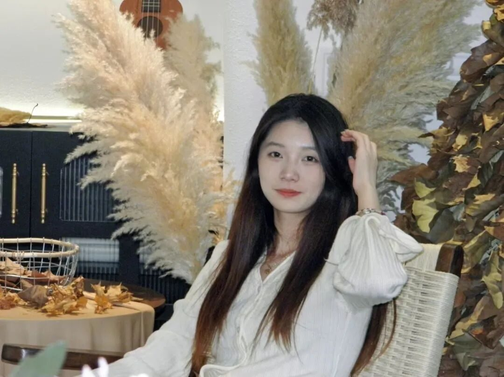
尹继萱
技术兼文宣专员
传千年之经义，燃万古之明灯。
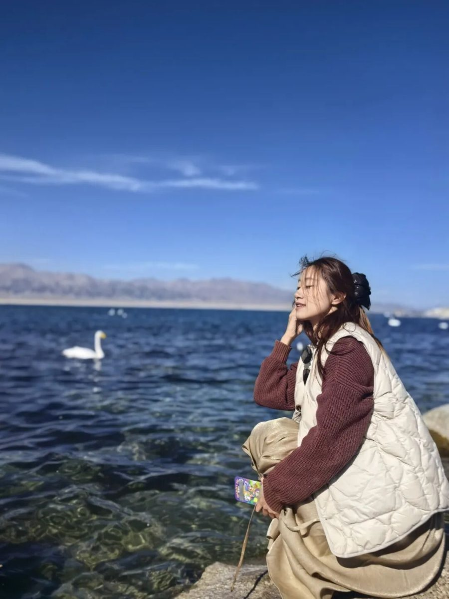
秦简宜
技术组专员
千里虽远，行则必至，
答案自在脚下。
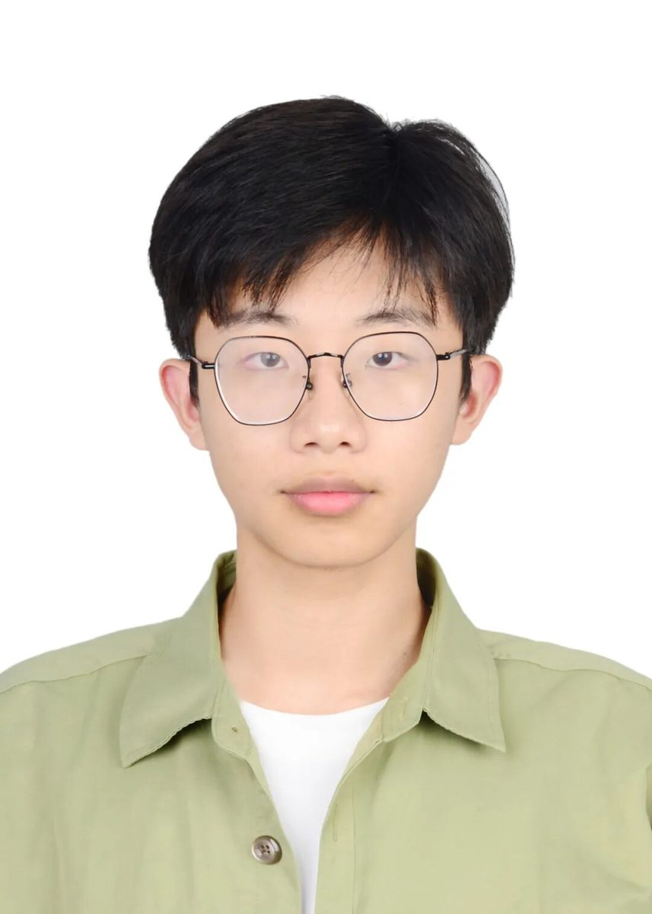
梁棋鑫
技术组专员
山不让尘，川不辞盈。

古城西安，梦回大唐
宋韵悠扬，千年风华尽展露
西安，我们来了！
XINGZHEWUJIANG


来源 | 行者无疆实践团
图片 | 行者无疆实践团
编辑 | 李麟凤
审核 | 李凌志、范伊诺
责编 | 邹靓靓